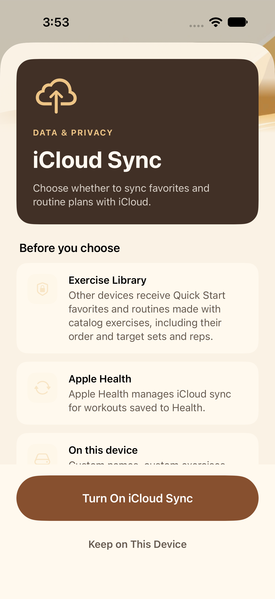

T02 · iCloud 동기화 동의

S01 · 데이터 및 개인정보
설정 캡처 원본은 검증 Mac의 XCTest 결과 번들에 보관했다.
2026년 11월 28일, 전용 iPhone 18 Pro 시뮬레이터 · iOS 27.2. 임시 저장소에서 UI 검사 두 건이 통과했다.

설정 캡처 원본은 검증 Mac의 XCTest 결과 번들에 보관했다.
캡처 범위는 일반 iPhone의 동의·설정 화면이다. 실제 복구 실행, iPad와 Duo의 배치, 저장소 열기 실패 화면은 이번 UI 검사에서 다루지 않았다.